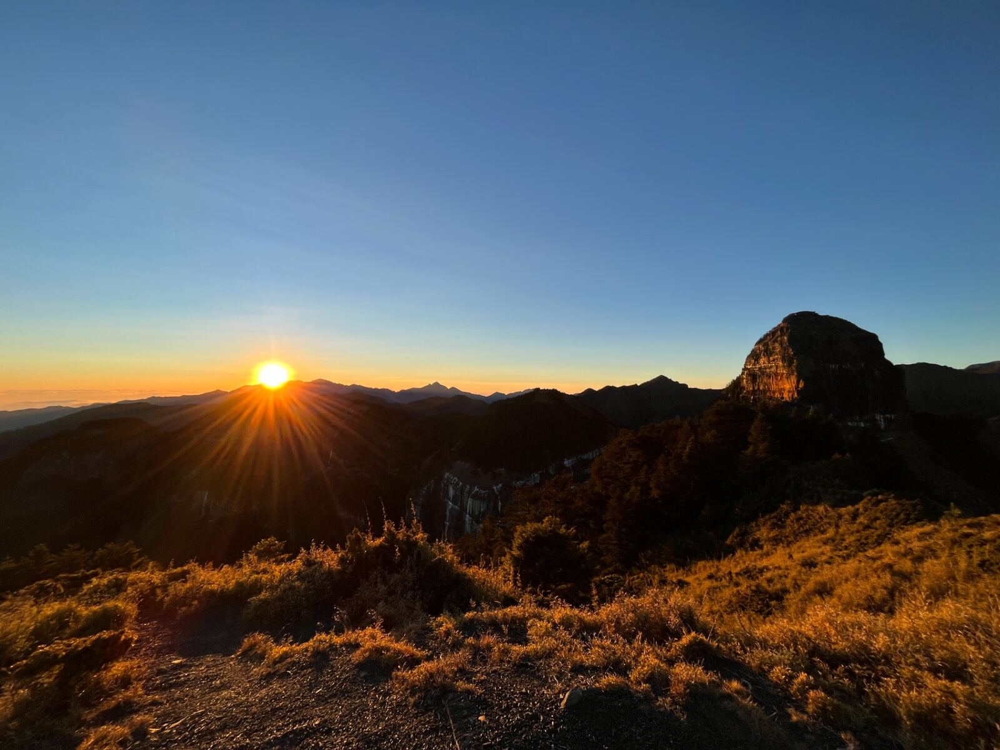
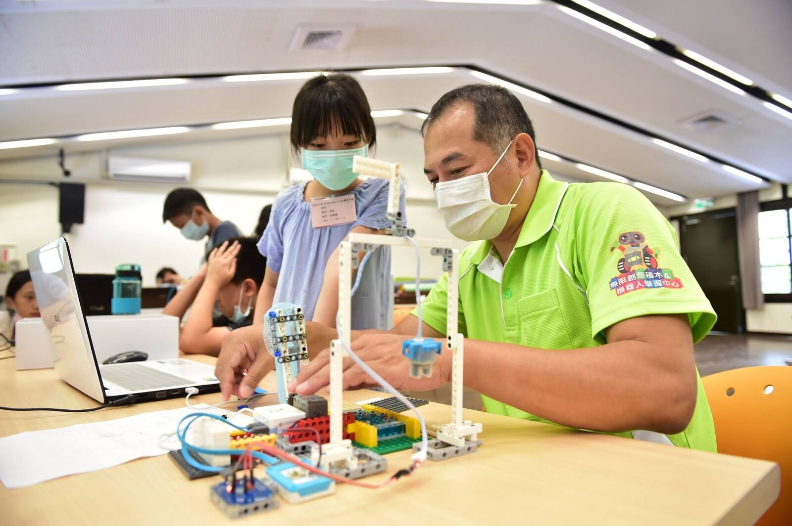
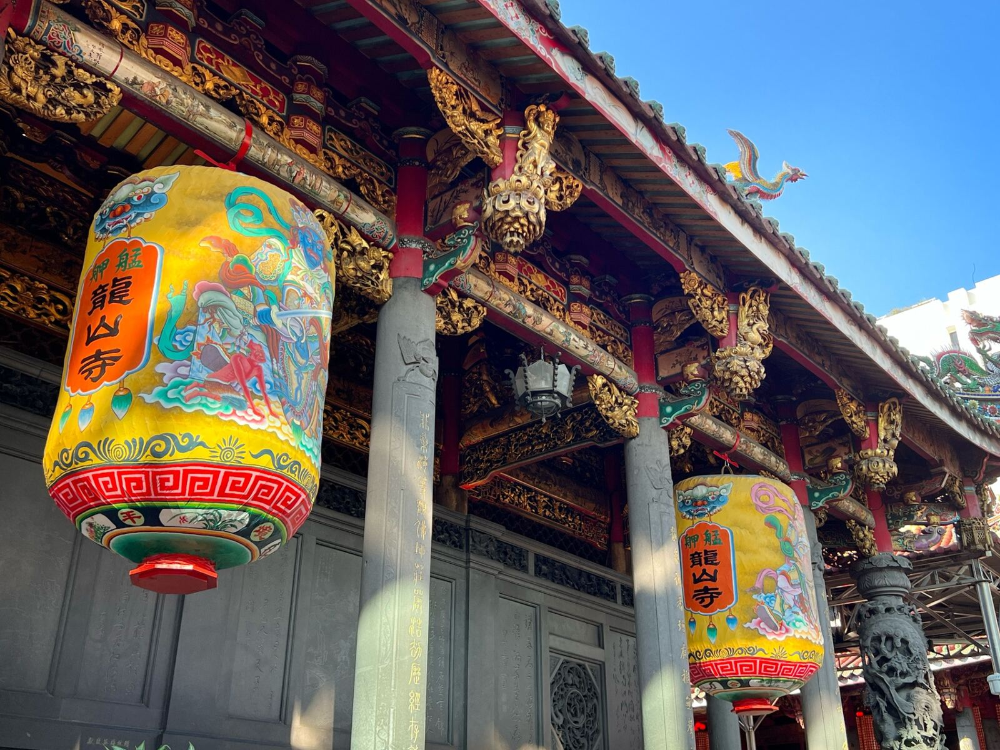
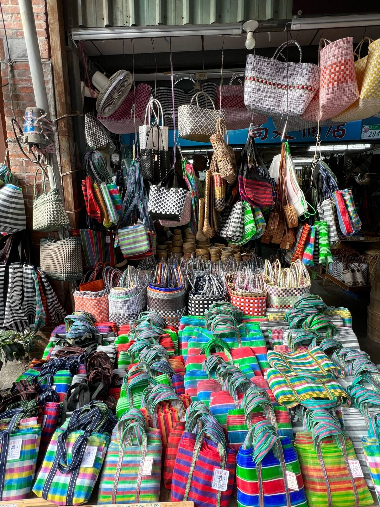

知行學旅 Fun Horizon Educational Trips
台灣教育旅行，
依您的團體量身規劃
教育旅行｜服務學習｜學術交流Customized School Trips · Service / CAS Trips · Academic Visits
知行學旅是設立於台灣、致力推動聯合國永續發展目標（SDGs）的遊學（研學）公司，主要運營教育旅行與商務交流。我們擅長跨域合作，與旅行社、學校、企業組織建立夥伴關係，替客戶規劃並執行符合課程或交流目的的行程。
2 個工作天內回覆提案方向
您是哪一種團體？
選一個，我們把最相關的服務、路線與表單類型直接帶到您面前。Which group are you?
- 國際學校（IB CAS） International / IB schools 推薦：IB CAS 行程
- 一般學校（服務學習、學科） Schools (service learning, subjects) 推薦：科目考察／STEAM
- 大學與企業（學術參訪） Universities & companies 推薦：學術參訪
- 華語與文化營 Chinese language camps 推薦：華語與文化營
國際學校（IB CAS）：3 條北中南 CAS 路線，每條 5–7 天，C/A/S 活動與 SDGs 已對應好，可直接拿去跟 CAS 協調員討論。
索取「IB CAS 行程」提案一般學校（服務學習、學科）：8 條科目考察行程可依學科篩選，地理、歷史、科學、STEAM、文學與體育都有；也能加入服務學習。
索取「科目考察／STEAM」提案
六種服務 What we design
每趟行程都從課程或交流目的出發設計，並融入至少 2 項聯合國 SDGs。
-
為您推薦
IB CAS 行程 IB CAS Trips
創意、活動、服務是 IB 國際文憑課程核心。我們的 CAS 行程符合 IB 要求，並融入至少兩項聯合國永續發展目標。
CAS programmes that meet IB requirements and cover at least 2 UN SDGs in every trip.
索取IB CAS 行程提案 -
 為您推薦
為您推薦服務學習 Service Learning
非 IB 學校也能在學習旅行中加入服務元素。我們分析需求，挑選合適的台灣在地組織共同規劃。
Not an IB school? We analyse your needs and partner with local organisations to add a service element.
索取服務學習提案 -
 為您推薦
為您推薦語言與文化 Language & Culture
台灣在地文化、華人歷史文化與原住民文化；並與華語中心及專業教師合作，提供短期華語營。
Taiwanese, Chinese and indigenous culture, plus short-term Chinese language camps with professional teachers.
索取語言與文化提案 -

為您推薦科目考察・STEAM Subject & STEAM Trips
依學科標準、課程目標或跨學科專題（PBL）設計的體驗式學科旅行。
Experiential trips built around subject criteria, curriculum goals or interdisciplinary PBL projects.
索取科目考察・STEAM提案 -
 為您推薦
為您推薦學術參訪 Academic Visits
為大學與企業設計專業主題行程，串連學術單位、NPO 與企業，協助在地聯絡與接待。
Thematic visits for universities and companies, connecting academia, NPOs and industry in Taiwan.
索取學術參訪提案 -
 為您推薦
為您推薦研習・演講・工作坊 PD, Talks & Workshops
人才庫擁有各領域持證專業講師，歡迎台灣企業與學校洽詢。
Certified instructors across many fields for schools and companies in Taiwan.
索取研習・演講・工作坊提案
IB CAS 路線：北、中、南三條 CAS routes across Taiwan
創意 Creativity、活動 Activity、服務 Service 三類活動都已排入，每條路線 5–7 天，可依學校需求增減。
-
北台灣 Northern Taiwan
桃園 Taoyuan
5–7 天 days
主題 Themes
- 海岸生態復育Coastal ecological conservation
- 海洋客家文化Ocean Hakka culture
- 傳統漁業文化與社區營造Fishing heritage & community development
- 循環再生永續產業Recycling to regeneration
- 11永續城鄉
- 12責任消費與生產
- 13氣候行動
- 14保育海洋生態
以桃園路線索取提案展開 C／A／S 活動清單 CAS activities
創 創意 Creativity
- 再生塑木手作與設計Crafts with recycled plastic wood
- 海客美食工作坊Ocean Hakka food workshop
- 海岸生物美術創作Coastal animal art creation
活 活動 Activity
- 獨木舟／立槳Canoeing / SUP
- 自行車遊Bike tour
- 海岸生態探索Coastal ecology exploration
服 服務 Service
- 百年石滬重建Century-old fishing stone weir reconstruction
- 淨灘Beach cleaning
- 海洋廢棄物回收與分類Marine debris recycling & sorting
學生將完整體驗：回收廢棄物 → PET 粒料 → 再生塑木 → 環保產品。Students follow the full loop: recycled waste → PET pellets → recycled plastic wood → eco-friendly products.
-

中台灣 Central Taiwan
嘉義・阿里山 Chiayi & Alishan
5–7 天 days
主題 Themes
- 阿里山探索與森林保育Alishan exploration & forest conservation
- 高山茶園服務High-mountain tea farm service
- 食農教育Food & agriculture education
- 高齡關懷Elderly care
- 3良好健康與福祉
- 12責任消費與生產
- 13氣候行動
- 15保育陸域生態
以嘉義・阿里山路線索取提案展開 C／A／S 活動清單 CAS activities
創 創意 Creativity
- 山產蔬菜料理工作坊Mountain vegetable cooking workshop
- 檜木木作工作坊Hinoki woodcraft workshop
- 台灣高山茶體驗Taiwanese high-mountain tea ceremony
活 活動 Activity
- 採茶體驗Tea picking
- 阿里山健行Hiking in Alishan
- 阿里山小火車山林探索Alishan Forest Railway adventure
服 服務 Service
- 高山茶園服務Service at a high-mountain tea farm
- 淨山服務Mountain clean-up
- 長者關懷服務Elderly care
-

南台灣 Southern Taiwan
高雄・美濃 Kaohsiung & Meinong
5–7 天 days
主題 Themes
- 客家文化體驗Hakka culture
- 高齡關懷Elderly care
- 社區營造與語言復振Community development & language revitalisation
- 動物生命教育Animal-care life education
- 3良好健康與福祉
- 11永續城鄉
- 12責任消費與生產
- 15保育陸域生態
以高雄・美濃路線索取提案展開 C／A／S 活動清單 CAS activities
創 創意 Creativity
- 油紙傘彩繪Oil-paper umbrella painting
- 客家擂茶與美食工作坊Hakka lei-cha & food workshop
- 生命教育故事創作Animal life-story creation
活 活動 Activity
- 美濃單車行Biking around Meinong
- 柴山健行Hiking Shoushan (Chaishan)
- 高雄環狀輕軌體驗Kaohsiung Circular Light Rail
服 服務 Service
- 在地學校文化交流與英語服務Cultural exchange & English service at a local school
- 長者關懷服務Elderly care
- 有機農事服務Organic farming
- 動物保護園區服務Service at an animal protection site
2 個工作天
內回覆提案方向。We reply within 2 working days.
- 由具 10 年以上國際學校經驗的團隊規劃
- 行程對應課程目標與 SDGs
- 協同旅行社執行，減少來回溝通
華語營、科目考察與學術參訪 Programme details
原本放在圖片裡的行程細節，全部整理成可閱讀、可搜尋的文字。
語言與文化 Language & Culture
華語課程 Chinese learning
與台灣專業華語中心及中文教師合作，提供母語（文學）與非母語學習者的短期華語課程。
Short-term Chinese programmes for native (literacy) and non-native learners, with professional language centres and teachers.
文化體驗 Culture
文化體驗是所有行程的核心：傳統中華文化、台灣在地文化與原住民文化，依學校與學生需求設計。
Every programme includes cultural activities — traditional Chinese, local Taiwanese and indigenous cultures — tailored to your school.
方案 A／B 比較 Program A vs. B
| 項目 | 方案 A：中文課程 + 文化體驗Program A: Chinese Learning + Cultural Experience | 方案 B：文化體驗 + 中文應用Program B: Cultural Immersion + Chinese Practice |
|---|---|---|
| 方案優點Advantages | 兼顧語言學習與文化體驗，兩者分開安排，行程更有彈性、內容更多元。Balances both, with a flexible and diverse itinerary. | 浸潤式學習，活動多元，可依學習或學校課程需求設計。Immersive, activity-rich, with Chinese practice built in. |
| 中文學習Chinese learning | 於大學華語中心或私人華語教室上課。Classes at a university or private language centre. | 行程中結合語言練習活動，學生在行程中應用華語。Language practice woven into the itinerary. |
| 文化體驗Cultural experience | 由知行學旅安排或部分配合語言中心，依學生興趣設計。Arranged by us or partly with the language centre. | 由知行學旅安排，依學生興趣與需求設計。Arranged by us around student interests. |
| 主題學習Thematic learning | 視需求將主題融入中文課或文化活動。Themes integrated into classes or cultural activities. | 學校可指定主題，行程依主題設計。Itinerary designed around a theme your school specifies. |
| 地點與天數Location & days | 5–30 天；大學校園、單一城市或跨縣市。5–30 days; single or multiple cities. | 5–30 天；單一城市或跨縣市。5–30 days; single or multiple cities. |
| 計費方式Pricing | 語言課依語言中心標準；其餘行程由知行學旅計費。Classes charged by the language centre; other activities by us. | 依行程與活動內容由知行學旅計費。Bespoke itinerary arranged and charged by us. |
其他可安排活動 Also available
語言交換、在地學校交流、大學參訪、服務學習、在地企業組織參訪、SDGs 等，可依需求與預算安排。
Language exchange, local school visits, university tours, service learning, company visits, SDGs and more — arranged to your needs and budget.
方案包含 Included
方案皆含台灣在地食宿與交通安排，並有專業人員隨團帶領。
Includes local accommodation, meals and transport in Taiwan, led by professionals.



科目考察・STEAM Subject & STEAM trips
8 條行程依學科標準與課程目標設計，也可改為跨學科專題（PBL）。
| 行程 | 地點 | 學科 | 考察重點 | 年級 | 天數 |
|---|---|---|---|---|---|
| 北海岸文化與地理考查Culture & Geography of the Northeast Coast | 台北・宜蘭・東北海岸Northeast Coast & Yilan | 地理、歷史Geography, History | 大屯火山群、海蝕海岸、黃金博物館Tatun Volcano Group, erosional coast, Gold Museum | 小學至高中All grades | 5–7 天 |
| 花蓮地理考查Geography Trip to Hualien | 台北・花蓮Taipei & Hualien | 地理、歷史Geography, History | 花東縱谷、斷崖、太魯閣峽谷、珊瑚礁與礫石海岸East Rift Valley, cliffs, Taroko Gorge, coral reefs, gravel beaches | 國中至高中Secondary | 5–7 天 |
| 北台灣科技與商業考察Technology & Business in Northern Taiwan | 台北・桃園・新竹Taipei, Taoyuan, Hsinchu | 科學、商業Science, Business | 青創基地、科學園區、半導體博物館Start-up hubs, Science Park, semiconductor museum | 國中至高中Secondary | 5–7 天 |
| 科學與地理考察Science & Geography in Taoyuan | 桃園Taoyuan | 化學、生物、地理Chemistry, Biology, Geography | 塑膠回收與再生全程考察、循環經濟、桃園海岸生態（藻礁、濕地、沙丘、石滬）Plastic regeneration, circular recycling, Taoyuan coast (algal reefs, wetlands, dunes, stone weirs) | 國中至高中Secondary | 5–7 天 |
| STEAM 考察STEAM Trip | 桃園・新竹Taoyuan, Hsinchu | STEAMSTEAM | 運算思維、邏輯編程、離線機器人、電子積木、科學園區、半導體博物館Computational thinking, logic programming, offline robots & tech-cube workshop, Science Park, semiconductor museum | 小學至高中All grades | 5–7 天 |
| 台灣中南部人文考察Culture & History of Central-Southern Taiwan | 台南・嘉義・南投Tainan, Chiayi, Nantou | 地理、歷史Geography, History | 台南歷史古都、嘉義阿里山、南投日月潭Historic Tainan, Alishan, Sun Moon Lake | 國中至高中Secondary | 5–7 天 |
| 南台灣文學與人文考察Literature & Humanities in Southern Taiwan | 高雄・屏東Kaohsiung, Pingtung | 文學、地理、歷史Literature, Geography, History | 城市文學走讀、熱帶氣候人文考查Literary city walks, tropical climate and culture | 小學至高中All grades | 5–7 天 |
| 體育交流與訓練Sports Training & Exchange | 台北／高雄Taipei / Kaohsiung | 體育（羽球、籃球）PE (badminton, basketball) | 羽球、籃球訓練或與在地學校體育交流Badminton/basketball training or exchange with local schools | 小學至高中All grades | 5–7 天 |
塑膠循環經濟 Plastic Circular Economy
桃園科學與地理考察的核心：學生走完塑膠從廢棄物到產品的每一站。
- 廢棄物管理Waste management
- 塑膠回收Plastic recycling
- 破碎造粒Shredding & granulation
- 研發R&D
- 產品開發Product development
- 合作夥伴以 80% 海洋與陸地回收塑膠製成環保再生塑木（海廢認證標章）。Our partner makes recycled composite wood from 80% ocean and land plastic waste (Ocean Waste Certification Mark).
- 每 100 公斤再生塑木可減少 274 公斤碳排放。Every 100 kg of recycled composite wood cuts 274 kg of carbon emissions.
- 製程廢料可完全回收再製，真正實踐循環經濟。All manufacturing waste can be fully recycled and remanufactured.
學術參訪 Academic visits
串連學術單位、在地非營利組織與企業，我們的學術參訪不只停留在拜訪，而是深入交流與探索，了解台灣的學術、產業與社會文化脈絡，建立有意義的合作關係。
Connecting universities, local NPOs and businesses, our academic visits go beyond site visits to real exchange — insight into Taiwan's academic, industrial and socio-cultural context, and lasting partnerships.
範例團 Sample programme
政治學與歷史 台灣研習團 Political Science & History — Taiwan Study Trip
- 3良好健康與福祉
- 10減少不平等
- 11永續城鄉
- 16和平正義與健全制度
參訪 Visit
- 中央政府機關Central government
- 歷史景點Historical sites
- 政黨總部Political party headquarters
探索 Explore
- 政治體制Political system
- 司法體系Judicial system
- 台灣民主轉型Taiwan's democratic transition
參與 Participate
- 公共事務與社會關懷議題Public affairs & social care issues
- 大學學術講座University academic seminars
研究 Research
- 街頭訪談：認識台灣人Street interviews with Taiwanese people
- 台美關係Taiwan–U.S. relations
- 10+年國際學校與 NPO 經驗years with international schools & NPOs
- 3條北中南 CAS 路線CAS routes: north, central, south
- 8條科目考察行程subject trip templates
- 2+項 SDGs／每趟行程UN SDGs in every trip
關於知行學旅 About us
知行學旅由擁有超過十年海外學校與非營利組織工作經驗的教師創立，在台灣與香港的國際學校及 NPO 累積了豐富的教學與教育旅行規劃經驗。
Founded by teachers and NPO workers with over 10 years of experience organising educational trips for international schools and NPOs in Taiwan and Hong Kong.
- 學校 Schools
- 旅行社 Travel Agencies
- 課程 Curriculum
- 企業組織 Enterprises
- 全球議題 Global Issues
- 願景 Vision
- 連結教育與企業界，透過客製的主題化旅行，協助青年學子拓展視野、實踐所學、接觸全球議題、培養全球公民意識。To connect education and business, helping young people expand their horizons, practise what they learn and engage with global issues through travel.
- 使命 Mission
- 協助學校和企業設計符合需求的遊學、學術或商務交流行程，並協同旅行社執行，減少溝通時間成本，更好地達成旅行目的。To design itineraries aligned with each client's curriculum or goals and execute them with travel-agency partners — less back-and-forth, better outcomes.
合作學校與老師推薦
待補：合作學校 logo／老師推薦。這一區保留給 4–6 個合作學校 logo 與 1–2 則老師或 CAS 協調員的推薦語，取得授權後放入。